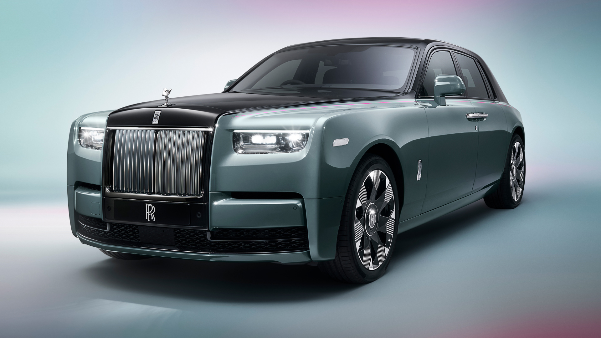
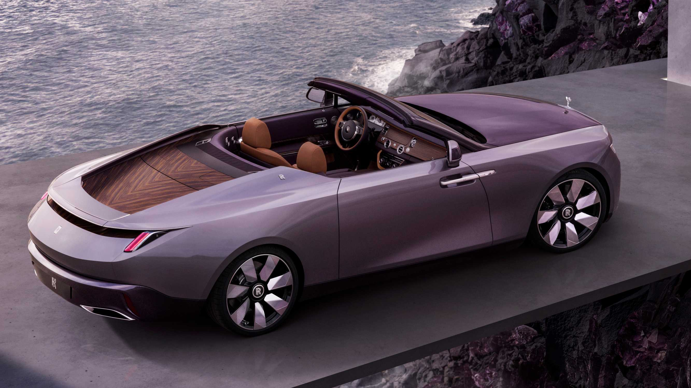

Галерея Rolls-Royce

PHANTOM
Phantom makes its arrival known through bold and original statements. Sublime features are underpinned by meticulous craft and engineering, resulting in an authoritative presence that demands both awe and attention.

Droptail
A modern interpretation of the roadster body style, Droptail represents the next chapter of
Rolls-Royce Coachbuild. Only four expressions of the motor car will ever be made, each the result of remarkable collaborations between Coachbuild artisans and ambitious, visionary clients. The first commission, Rolls-Royce La Rose Noire Droptail, embodies the allure of the Black Baccara rose.

Cullinan
The standard features of the Rolls-Royce Cullinan Base include 6.7L V-12 563hp twin turbo engine, 8-speed automatic transmission with overdrive, 4-wheel anti-lock brakes (ABS), integrated navigation system, side door mounted airbags, curtain 1st and 2nd row overhead airbags